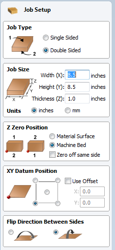
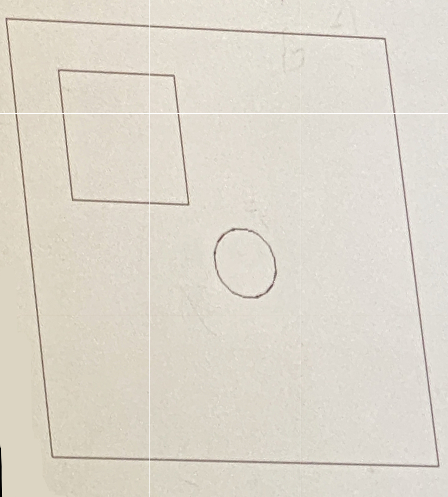
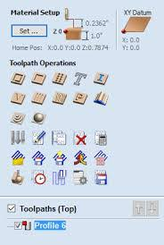
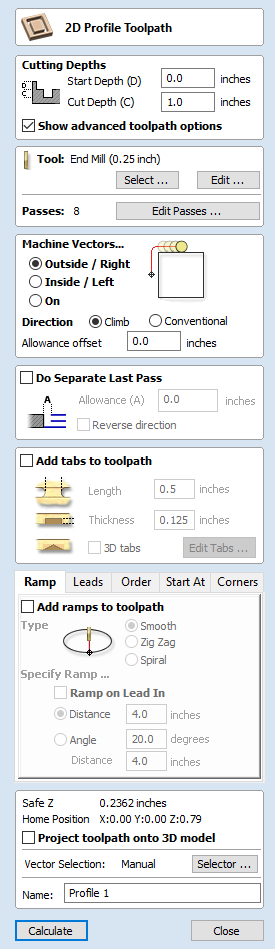
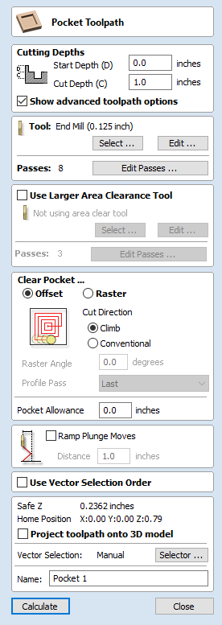
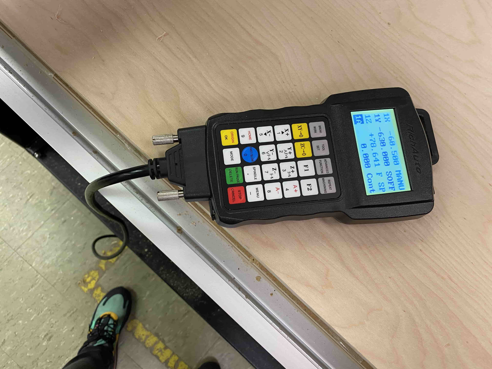
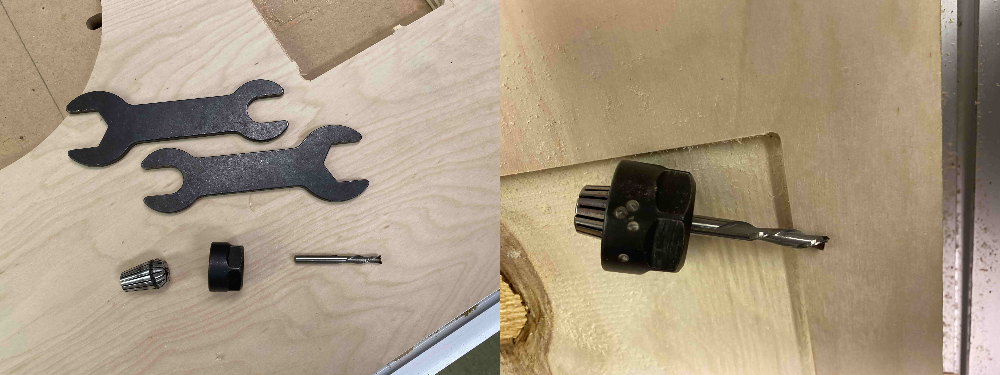
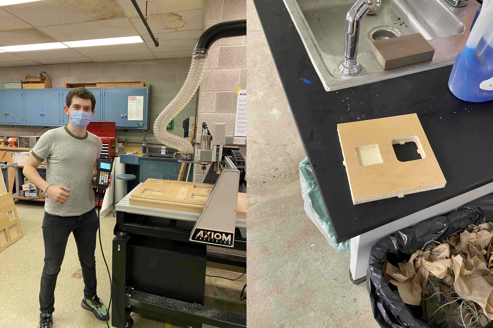

5.2 CNC Training
In my training for the CNC Machine, I learned how to use the Vcarve CAD/CAM software that is really user friendly and easy to access all the important information and buttons.

In the Vcarve Software I learned how to input my workspace size (the CNC Router bed size) as 24 inches to 48 inches, the object size as 24 inches to 48 inches to 0.75 inches, the counture drill depth, pocket depth, adjust the home position, adding tabs so the piece will stay secure even after cutting, tool paths, etc.
Initially I started by learning the basics in Vcarve CAD/CAM Software. I drew a 2D layout and learn to transform it around the workspace.
After learning the basics in designing on Vcarve, I learned how to turn this CAD to CAM. For that I used the toolpath bar and that gave me options to select. These options represents different CNC opporations.
For cutting the object, I used the "2D Profile Toolpath" option. This gave me options such as the cutting depth (which we assigned as 0.78 inches), which tool to use (which we selected as 1/4 inch down-cut end-mill bit), The way of cutting around the CAD defined borders, adding tabs, and renaming the file and savingit.
After doing the profile cut settings of my object, now I have to do pockets. So, I used the pocket tool to make pockets in my object. Unlike Profiling an object, pocket tool does not cut the whole way through and this allows me to do pockets in different sizes.
After learning the Vcarve CAD/CAM Software, we moved on to learning the CNC Machiene. At first I learned to how to control th CNC Routeer using the controller. I can use the controller for adjusting the position of the router, set a new home, upload file by inserting a USB flash drive and do all the other settings.
After learning the controller, I learned how to mount the bit on to the CNC router. For this I learned that I should use 2 wrenches to loosen the nut that is holding the bit. However, I also learned that if done wrong it is dangerous and that I can hurt myself. The right way to do it is by pushing the two wrenches towards each other, so that even if the wrenches slip out of your hand, you will hit your hand and won't hurt yourself as bad as hitting a metal sharp piece.
After learning everything I was ready to cut out my first ever Substractive Manufactured object.
